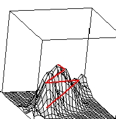
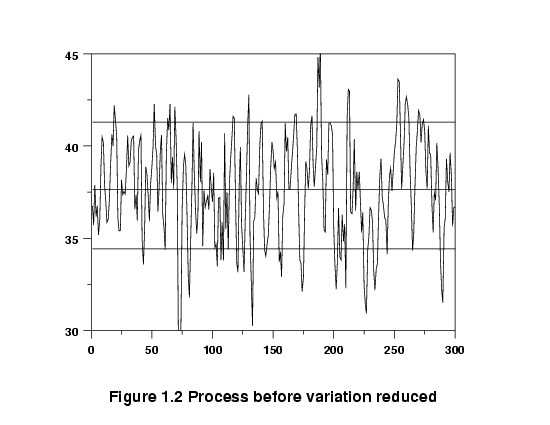
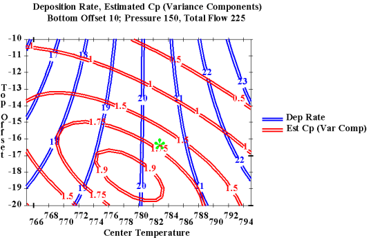

5.
Process Improvement
5.1.
Introduction
5.1.2.
|
What are the uses of DOE?
|
|
|
DOE is a multipurpose tool that can help in many situations
|
Below are seven examples illustrating situations in which experimental
design can be used effectively:
|
|
|
Choosing Between Alternatives
(Comparative Experiment)
|
|
A common use is planning an experiment to gather data to make a decision
between two or more alternatives
|
Supplier A vs. supplier B? Which new additive is the most effective?
Is catalyst `x' an improvement over the existing catalyst? These and
countless other choices between alternatives can be presented to us in a
never-ending parade. Often we have the choice made for us by outside
factors over which we have no control. But in many cases we are also
asked to make the choice. It helps if one has valid data to back up
one's decision.
The preferred solution is to agree on a measurement by which competing
choices can be compared, generate a sample of data from each alternative,
and compare average results. The 'best' average outcome will be our
preference. We have performed a
comparative experiment!
|
|
Types of comparitive studies
|
Sometimes this comparison is performed under one common set of
conditions. This is a comparative study with a narrow scope - which
is suitable for some initial comparisons of possible alternatives.
Other comparison studies, intended to validate that one alternative
is perferred over a wide range of conditions, will purposely and
systematically vary the background conditions under which the primary
comparison is made in order to reach a conclusion that will be proven
valid over a broad scope. We discuss experimental designs for each
of these types of comparisons in Sections
5.3.3.1 and
5.3.3.2.
|
|
|
Selecting the Key Factors
Affecting a Response
(Screening Experiments)
|
|
Selecting the few that matter from the many possible factors
|
Often there are many possible factors, some of which may be critical
and others which may have little or no effect on a response. It may be
desirable, as a goal by itself, to reduce the number of factors to a
relatively small set (2-5) so that attention can be focussed on
controlling those factors with appropriate specifications, control
charts, etc.
Screening experiments are an efficient way, with a minimal number of
runs, of determining the important factors. They may also be used as a
first step when the ultimate goal is to model a response with a response
surface. We will discuss experimental designs for screening a large
number of factors in Sections
5.3.3.3,
5.3.3.4
and 5.3.3.5.
|
|
|
Response
Surface Modeling a Process
|
|
Some reasons to model a process
|
Once one knows the primary variables (factors) that affect the responses
of interest, a number of additional objectives may be pursued. These
include:
What each of these purposes have in common is that experimentation is
used to fit a model that may permit a rough, local approximation to the
actual surface. Given that the particular objective can be met with
such an approximate model, the experimental effort is kept to a minimum
while still achieving the immediate goal.
These response surface modeling objectives will now be briefly expanded
upon.
|
|
|
Hitting a Target
|
|
Often we want to "fine tune" a process to consistently hit a target
|
This is a frequently encountered goal for an experiment.
One might try out different settings until the desired target is `hit'
consistently. For example, a machine tool that has been recently
overhauled may require some setup `tweaking' before it runs on target.
Such action is a small and common form of experimentation. However,
rather than experimenting in an ad hoc manner until we happen to find
a setup that hits the target, one can fit a model estimated from a small
experiment and use this model to determine the necessary adjustments to
hit the target.
More complex forms of experimentation, such as the determination of
the correct chemical mix of a coating that will yield a desired
refractive index for the dried coat (and simultaneously achieve
specifications for other attributes), may involve many ingredients and
be very sensitive to small changes in the percentages in the mix.
Fitting suitable models, based on sequentially planned experiments, may
be the only way to efficiently achieve this goal of hitting targets for
multiple responses simultaneously.
|
|
|
Maximizing or Minimizing
a Response
|
|
Optimizing a process output is a common goal
|
Many processes are being run at sub-optimal settings, some of them for
years, even though each factor has been optimized individually over
time. Finding settings that increase yield or decrease the amount of
scrap and rework represent opportunities for substantial financial gain.
Often, however, one must experiment with multiple inputs to achieve a
better output. Section 5.3.3.6 on
second-order designs plus material in
Section 5.5.3 will be useful for
these applications.

FIGURE 1.1 Pathway up the process response surface
to an `optimum'
|
|
|
Reducing Variation
|
|
Processes that are on target, on the average, may still have too much
variability
|
A process may be performing with unacceptable consistency, meaning its
internal variation is too high.
Excessive variation can result from many causes. Sometimes it is due
to the lack of having or following standard operating procedures. At
other times, excessive variation is due to certain hard-to-control
inputs that affect the critical output characteristics of the process.
When this latter situation is the case, one may experiment with these
hard-to-control factors, looking for a region where the surface is
flatter and the process is easier to manage. To take advantage of such
flatness in the surface, one must use designs - such as the second-order
designs of Section 5.3.3.6 - that
permit identification of these features. Contour or surface plots are
useful for elucidating the key features of these fitted models. See
also 5.5.3.1.4.
|
|
Graph of data before variation reduced
|

It might be possible to reduce the variation by altering the setpoints
(recipe) of the process, so that it runs in a more `stable' region.
|
|
Graph of data after process variation reduced
|

|
|
|
Finding this new recipe could be the subject of an experiment,
especially if there are many input factors that could conceivably
affect the output.
|
|
|
Making a Process Robust
|
|
The less a process or product is affected by external conditions, the
better it is - this is called "Robustness"
|
An item designed and made under controlled conditions will be later
`field tested' in the hands of the customer and may prove susceptible
to failure modes not seen in the lab or thought of by design. An
example would be the starter motor of an automobile that is required to
operate under extremes of external temperature. A starter that performs
under such a wide range is termed `robust' to temperature.
Designing an item so that it is robust calls for a special experimental
effort. It is possible to stress the item in the design lab and so
determine the critical components affecting its performance. A different
gauge of armature wire might be a solution to the starter motor, but so
might be many other alternatives. The correct combination of factors
can be found only by experimentation.
|
|
|
Seeking Multiple Goals
|
|
Sometimes we have multiple outputs and we have to compromise to
achieve desirable outcomes - DOE can help here
|
A product or process seldom has just one desirable output
characteristic. There are usually several, and they are often
interrelated so that improving one will cause a deterioration of
another. For example: rate vs. consistency; strength vs. expense; etc.
Any product is a trade-off between these various desirable final
characteristics. Understanding the boundaries of the trade-off allows
one to make the correct choices. This is done by either constructing
some weighted objective function (`desirability function') and
optimizing it, or examining contour plots of responses generated by a
computer program, as given below.
|
|
Sample contour plot of deposition rate and capability
|

FIGURE 1.4 Overlaid contour plot of Deposition Rate and
Capability (Cp)
|
|
|
Regression Modeling
|
|
Regression models (Chapter 4) are
used to fit more precise models
|
Sometimes we require more than a rough approximating model over a local
region. In such cases, the standard designs presented in this chapter
for estimating first- or second-order polynomial models may not suffice.
Chapter 4 covers the topic of
experimental design and analysis for fitting general models for a single
explanatory factor. If one has multiple factors, and either a nonlinear
model or some other special model, the computer-aided designs of
Section 5.5.2 may be useful.
|